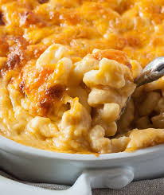
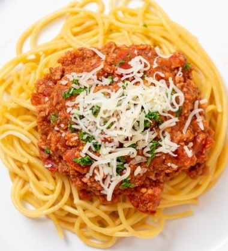
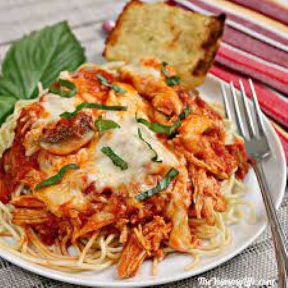

Southern Baked Macaroni and Cheese
default...Read More

Wickedly Good Spagehtti with Sausage
This is my go to meal for my family when I'm in a rush, but also want to make something hearty. Originally, this was my husband's recipe...Read More

Easy Chicken Parmesan
default...Read More